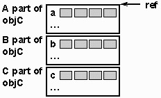
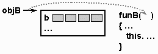
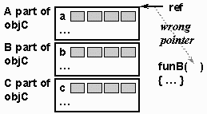
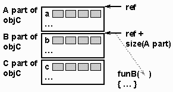
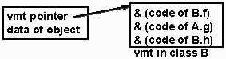
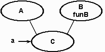
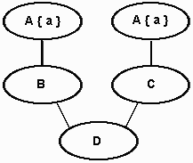
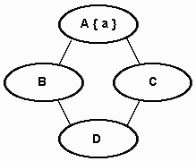

INHERITANCE
© Eileen Head, Leslie C. Lander, 2000
Purpose: To expose student to properties of inheritance in object
oriented languages.
IMPLEMENTING INHERITANCE
-
First, consider the data fields
class A{
int a;
...
}
class B extends A {
int b;
...
}
class C extends B{
int c;
...
}
how is access to c coded
-
Storage of an object: C objC;

offsets again
-
Access to storage:
-
To access the variable "c" the compiler will need to insert an address
computation such as:
ref + (offset of C part) + (offset of c in C part)
i.e. ref + size(A part) + size(B part) + (offset of c in C part)
give the compiler warning that c is accessible
-
In either case, the values of the offsets and sizes are determined during
compilation
-
You can only access "c" of an instance, whose static type is C
-
Note that the compiler is not required to actually store the A, B and C
records in the order shown
Multiple inheritance is bad news
-
The corresponding problems of multiple inheritance (C++):
class A{
int a;
protected void funA( )
...
}
class B{
int b;
protected void funB( )
...
}
class C: public A, public B {
...
}
Looks the same at first
-
Storage of an object: C* objC;
B alone is quite normal
-
Access to storage:
-
How does the call "objC->funB( )" access "b"?
-
First, consider what happens when we have:
B objB;
objB->funB( );
Apparently, the address of objB’s storage is passed to funB
Meaning of this
-
There will only be one copy of the code for "funB"
-
To tell "funB" which object record to access, the pointer to objB’s storage
is passed as an implicit parameter to funB (called "this")

Accessing B from code for C
-
When "funB" accesses "b" the computation is simple:
address of objB + (offset of b in B record)
Now we return to objC->funB( )
Compilers have to avoid a mistake

Do not pass the obvious pointer to funB
-
It is a mistake to pass the address of objC to fun B because the computation:
address of objC + (offset of b in B record)
does not get to "b": it lands some-where in the A part !
Remember the code of funB cannot know about the inherited class C
Somehow the call to funB needs the right pointer
Whenever the compiler has a call objC->funB( ) it has to know to translate
the address passed to funB as: address of objC + size(A part) + (offset
of b in B record)
pass this with an extra offset

Run-time checks are needed
-
BUT … the compiler cannot always tell which address is appropriate:
B* ptrB;
cin >> ch;
if (ch == 'A') ptrB = new B;
else ptrB = new C; ptrB->funB( );
// there must be code in place to decide the correct "this"
Solutions?
-
There are probably several solutions but they are not clear to me:
-
Ellis & Stroustrup (p.229) suggest storing the offset in the virtual
method table (vtbl). The vtbl is discussed below
-
Terribile suggests (p.356) suggests extra "virtual functions" added by
the compiler
Overridable functions
-
So now we have to talk about
VIRTUAL FUNCTIONS
-
All non-final, instance methods in Java are virtual but in C++ they must
be declared virtual
class A {
virtual void funA( ){
...
}
}
overriding in action
-
If a virtual function is redefined in a subclass then it is the subclass
version that is called when an instance of the subclass makes the call
even if that object was declared to be of the parent class
-
The dynamic type determines which method to call
Simple C++
class A {
public virtual void funA( ) {
cout << 1;
}
}
class B : public A {
void funA( ) {
cout << 2;
}
}
override
...
A* ptrA = new B;
ptrA->funA( );
// returns 2 because ptrA is currently pointing to a B object
Virtual functions are implemented using virtual method tables called a
vtbl in the books from AT&T people, called vmt in some references
Simple example
Consider Java code:
class A {
void f ( ) { ... }
void g ( ) { ... }
}
class B extends A {
void f ( ) { ... }
void h ( ) { ... }
}
class C extends B {
void f ( ) { ... }
}
Only one copy of the code of any method is stored and it is stored with
the class
The class also has a virtual method table
vmts
class A {
void f ( ) { ... }
void g ( ) { ... }
}
|
---------------
|& (code of A.f)|
|& (code of A.g)|
---------------
|
class B extends A {
void f ( ) { ... }
void h ( ) { ... }
}
|
---------------
|& (code of B.f)|
|& (code of A.g)|
|& (code of B.h)|
---------------
|
class C extends B {
void f ( ) { ... }
}
|
---------------
|& (code of C.f)|
|& (code of A.g)|
|& (code of B.h)|
---------------
|
objects point to the vmt
-
Suppose we write new B( );
-
Then we create a B object
-
That B object must contain a pointer to the vmt for B, as shown:

Accessing the vmt
-
Suppose we declare and instantiate as follows:
A a = new C( );
Because of the static type we can only call a.f( ) and a.g( )--unless we
use a "cast" to inform the compiler that a subtype is expected
But the object C has a pointer to the vmt of class C!
a.g( ) means "call method whose address is a.vmt[1]," in other words the
version of the code called C.f( )
vtbl/vmt
-
The instance-records have pointers to vtbl’s (one vtbl for each part in
the case of inherited classes)
-
It is easier to look at single inheritance as in Java
-
The book by Terribile has some terrifying figures of the complexity of
the vmt, when you have "virtual" multiple inheritance
More on multiple inheritance
class A{
int a;
public void funA( )
...
}
class B{
int b;
public void funB( )
...
}
class C: public A, public B {
int c;
public void funC( )
...
}
A real main function
void main(){
A* a = new C();
((B*)a)->funB();
}
Casting may override the dynamic type of a variable
Consider:
A* a = new C( );
((B*)a)->funB( );
even if funB were redefined in C, the casting requires a call to B’s version
of funB
Dynamic Casting?

Recall Real code
#include "iostream.h"
class A {
public:
void funA() {cout<<1<<"\n";}
};
class B {
public:
void funB() {cout<<2<<"\n";}
};
class C: public A,public B {
public:
void funC() {cout<<3<<"\n";}
};
void main(){
A* a = new C();
((B*)a)->funB();
}
The above works with GCC
Another version compiles but gives "Segmentation fault." This version uses
the same main( ), but modify B and C as follows
#include "iostream.h"
class A {
public:
void funA() {cout<<1<<"\n";}
};
class B {
public:
virtual void funB() {cout<<2<<"\n";}
};
class C: public A,public B {
public:
void funB() {cout<<3<<"\n";}
};
Diamond Problem
class A {
int a;
...
}
class B : public A {
...
}
class C : public A {
...
}
class D : public B, public C {
...
}
D-objects get 2 copies of A’s data: …
class D {
void funD( ) {
B->a = 1;
C->a = 2;
// separate a’s, different values stored
}
...
}
The locations of the two a’s

Virtual multiple inheritance
-
Virtual multiple inheritance is the answer:
class A {
int a;
...
}
class B : virtual public A {
...
}
class C : virtual public A {
...
}
class D : public B, public C {
...
}
Only one copy of "a"

Graphic from Terribile
-
Terribile shows separate vmt ’s for each class in a hierarchy, even for
simple inheritance in C++
-
This graphic is for virtual multiple inheritance (we refere the reader
to the book)
Quote from Terribile
"The object layout with virtual multiple inheritance is much,
much hairier than without. We will only touch on the issue; the complications
are superabundant, interesting, esoteric, and far into the realm of compiler
writers, language designers, and other practitioners of arcane arts."